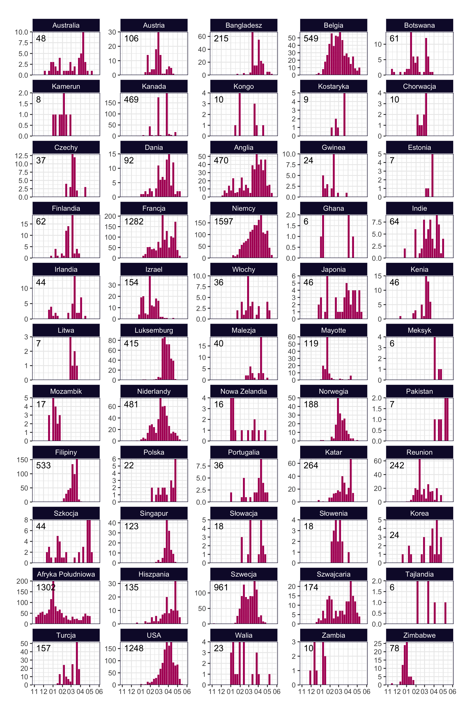

Variants of Concern (VoC)
According to ECDC nomenclature, this designation is used for variants for which there is a clear evidence of a significant impact on transmissibility, disease severity or immunity, which are likely to have an impact on the epidemiological situation in the EU/EEA.
The following VoCs are currently defined for SARS-COV-2:
Alpha (B.1.1.7, British). Main mutations: N501Y, D614G. There are evidence of increased infectivity and severity. Dominant variant in Europe.
Beta (B.1.351, South African). Main mutations: K417T, E484K, N501Y, D614G. There are evidence of increased infectivity and severity.
Gamma (P.1, Brazilian). Main mutations: K417N, E484K, N501Y, D614G. There are evidence of increased infectivity and severity.
Delta (B.1.617.2, Indian). Main mutations: L452R, T478K, D614G.
Presented data is taken from GISaid. Keep in mind that not all variants are currently present in Europe.
Occurrences of Delta variant (Indian, B.1.617.2)Occurrences of Alpha variant (British, B.1.1.7)

Occurrences of Gamma variant (Brazilian, P.1)
Occurrences of Beta variant (South African, B.1.351)
